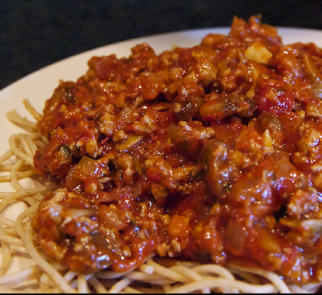

Home
Pasta and Meatsauce in Record Time

Description
This pasta and meatsauce is so quick you'll wonder how it's so good and why you didn't make it before. No simmering for 4 hours, no need to make your own pasta from scratch. This is the meal you want when you haven't eaten in 15 hours and you just need to get filled to the brim.
Ingredients
- Ground turkey (4 heaping tbsb)
- Dry Pasta (any variation)
- Storebought Pasta Sauce (1 cup)
- Italian Herb Seasoning or Dried Thyme/Basil/Parsley
- Salt
- Black Pepper
- Garlic Powder
- Cheese (pref. mozzerella and grated parm)
Directions (15 minutes)
- Start boiling a pot of water on the stove
- In another pan, put the raw ground turkey in it and cook on med-high heat. Let the water start to come out of turkey naturally. As the turkey cooks, continously break up the big chunks using a wooden spoon
- When the pasta water starts to boil, add a heaping tsp of salt (don't make it taste like the ocean like other blogs tell you) and add the pasta. Set a timer for 9 minutes.
- When the ground turkey's natural water is about to dry out, season generously with salt, pepper, and garlic powder. When the pan is really dry, add neutral oil to coat the turkey and break up the clumps one last time. Let the turkey cook on this side for a few minutes
- Stir the turkey pan, you want each side of the turkey to be so dark-maroonish from searing that if you cooked any longer it it might burn. This is best done on high heat so that the exterior cooks quickly but the inside doesn't dry out. Remember the turkey was partially par-boilied in its own juices so its soft on the inside.
- When the turkey is just about crisp on every side, add in the storebought pasta sauce directly to the pan. Then take a 1/4 cup of the pasta water and add it to the pan as well. Lastly, add a generous amount of the Italian herb seasoning and let this simmer until reduced on high heat for ~3 minutes
- When the pasta is ready, strain it and put it into a dish of your choosing (bowl/plate). Pour the meatsauce directly on top. Lastly, top with grated or shredded cheese of your choosing
And there we have it! Pasta and meatsauce in record time. This is extremely filling and satisfying meal that will keep your hungry stomach noises at bay all night.